Best Practices in Data Science
DMgtAsia · Session-II
Why the need for Best Practices?
Genesis
- Digital Platforms for Disease Surveillance and Control: Best Practices from Asia (DMgtAsia)
- Bridge the gap between public health and technology
- Post COVID-19: Need for data-driven decision-making at scale
- Limited training capacity in LMICs in this area
- Develop standardized, reproducible best practices that can be adapted globally
Why Best Practices Matter
- Provide Guidance to navigate the complexities of data science
- Plethora of information on Data Science available, without clear direction
- Handholding in your learning journey, not learning in isolation
- Steep Learning Curve: structured pathways reduce frustration
Why Best Practices Matter (cont.)
- Inevitable use of AI: a Human in the Loop approach
- Set you apart from the crowd: credibility through proven methods
- Consistency among trainers, to maintain quality
What are these Best Practices?
- Based on a Scientific Approach
- Grounded in epidemiological principles and data science methodology
- Validated in the real-world and through peer-reviewed literature
- Tried & Tested for over a decade of working in this Area
- SCTIMST: Public Health Technologies Training Modules
- Resource Faculty: Years of collective experience in teaching
What are these Best Practices?
- Walk the Talk
- We actively use these practices in our day-to-day teaching & research
- We make conscious decisions to use these best practices in our own work
- Self critique and Support one another
- Worked for over 300+ learners from over 75+ institutions
- Medical professionals, informaticians, data scientists, healthcare workers
- Recognised a Best Practice in Public Health Teaching (IAPSMCON-2024)
- Multiple Verticals
What are these Best Practices?
- State of the Art tools
- R: Developed by and for statisticians and epidemiologists
tidyverse: Industry-standard for reproducible workflows- Quarto: A Language Agnostic Dynamic Authoring Framework
- Industry Standard
- Aligns with international best practices
- Recognized by WHO, CDC, UNICEF, and global health agencies
- Facilitates collaboration with other research teams
Best Practice #1:
Philosophical Underpinnings
Core Philosophies
Data Science is a Tool for Social Good, Not an End in Itself
Data for Better Lives
3D Commission Recommendations
FAIR Data Principles
- The Public Health Lens
- Bridging Disciplines
Best Practice #2:
Reproducibility
What is Reproducibility
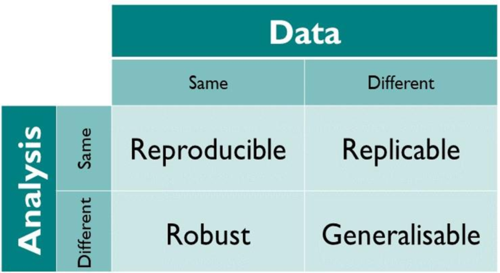
FAIR Principles and Reproducibility
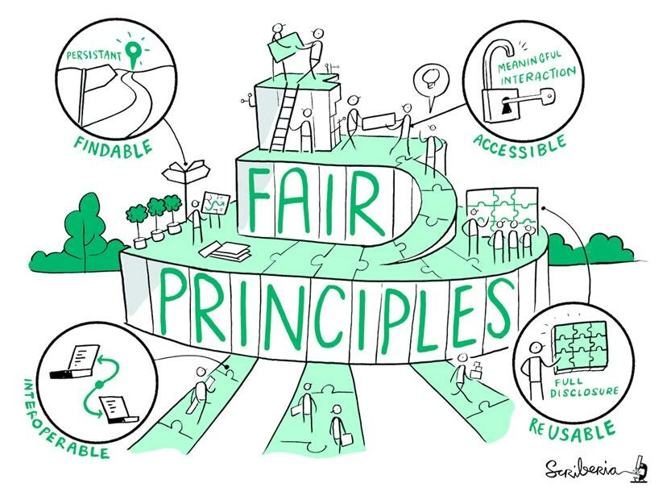
FAIR and CARE
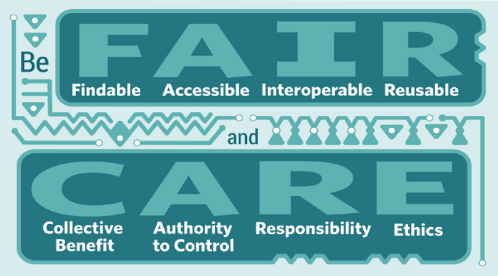
FAIR Principles and Reproducibility
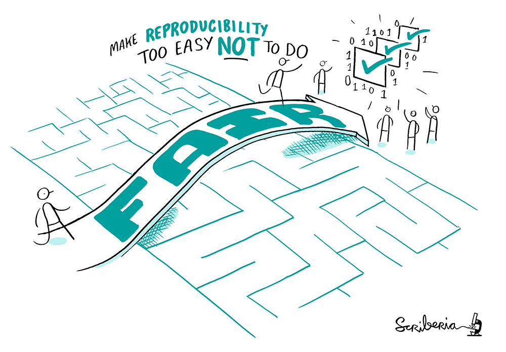
Reproducible Workflows
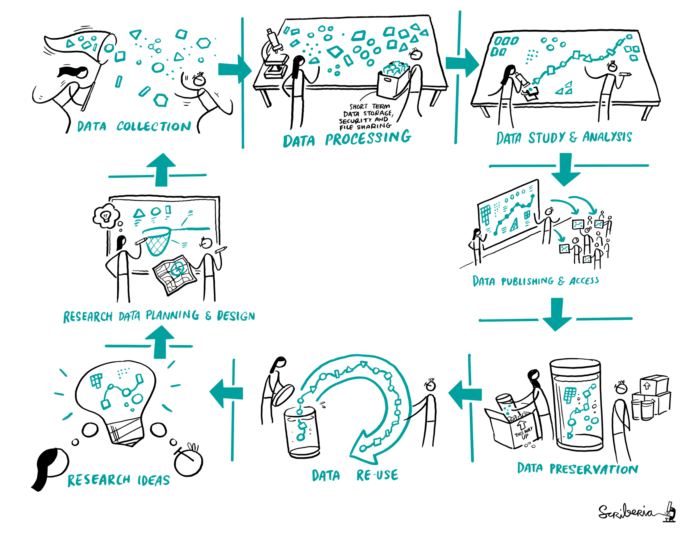
The Reproducibility Spectrum
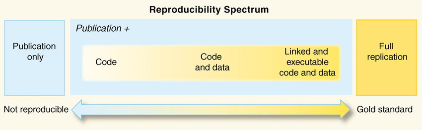
Best Practice #3:
Tool Choices
Why R (and not other tools)?
- Born from S language, specifically designed for statistical analysis
- The global epidemiology and biostatistics community uses R
- Hundreds of packages for health research
- Open-source: you can see how calculations are done
- Windows, Mac, Linux: runs even on older computers
- Thousands of tutorials, Stack Overflow answers
R vs. Alternatives for Health Research
| Tool | Strength | Limitation |
|---|---|---|
| Excel | Accessible, intuitive | Prone to errors, not reproducible |
| SPSS/Stata | User-friendly GUI | Expensive, less transparent, limited Customization Options |
| Tableau/Jamovi | Less Expensive than others | Limited Analysis Options |
| Python | General-purpose, flexible | Steeper learning curve for epidemiologists |
| R | Purpose-built for stats, reproducible, free | Slightly steeper initial learning curve |
The R Ecosystem
- R Programming Language: The Engine!
- RStudio IDE: The Dashboard!
- Quarto/R Markdown: Combine narrative text + code + output (reproducible documents)
tidyverse: Collection of R packages designed for modern data workflows
Best Practice #4:
Literate Programming
What is Literate Programming?
Code + Narrative + Output = Single Document
Start with a DATA DICTIONARY
The Concept (Donald Knuth, 1984)
- Programs should be written for people to read, not just for machines to execute
- Mix explanation with code
- Generate analysis reports that are reproducible and transparent
In Practice: Quarto/R Markdown
Write it once. The document weaves narrative, code, and output together:
attack_rates.qmd
# Age-Stratified Attack Rates
Attack rates by age group for the Sholayur Acute Gastroenteritis outbreak.
## Data Preparation
```{r}
age_data <- read_csv(here("data", "family_members.csv")) |>
mutate(age_group = factor(age_group,
levels = c("0-4", "5-17", "18-64", "65+")))
```
## Results
```{r}
age_data |>
group_by(age_group) |>
summarise(
n_symptomatic = sum(symptomatic, na.rm = TRUE),
n_total = n(),
attack_rate = n_symptomatic / n_total * 100
)
```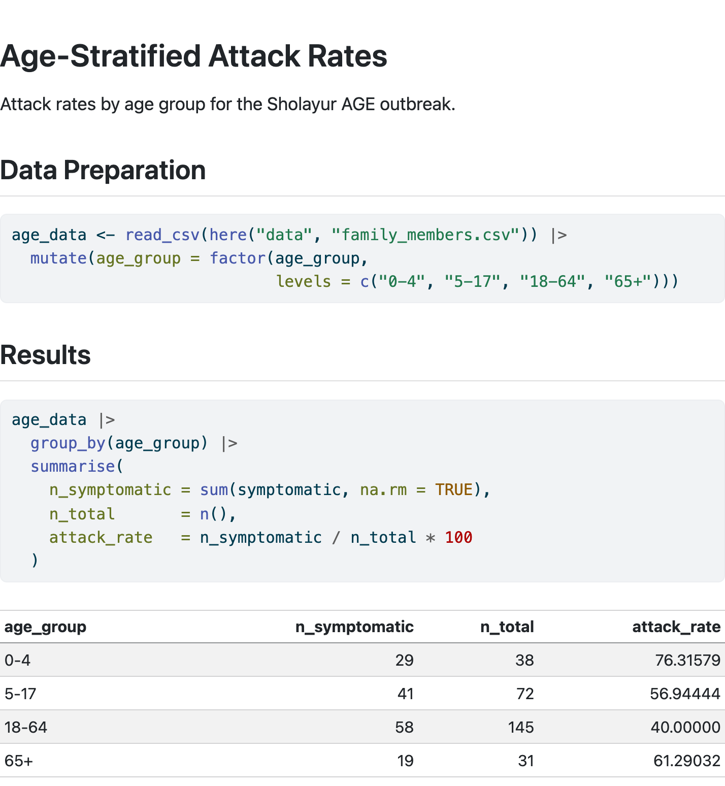
Best Practice #5:
Structure & Consistency
Project Organization
A well-organized project is a well-organized mind.
Standard Directory Structure
my_analysis/
├── README.md # Project overview
├── data/
│ ├── raw/ # Never modify
│ │ └── gastroenteritis_sholayur.csv
│ ├── processed/ # Cleaned, validated data
│ │ └── gastroenteritis_clean.csv
│ └── data_dictionary.md
├── scripts/
│ ├── 01_data_cleaning.R
│ ├── 02_descriptive_analysis.R
│ └── 03_inferential_stats.R
├── results/
│ ├── tables/
│ ├── figures/
│ └── outputs/
├── reports/
│ ├── outbreak_report.qmd
│ └── outbreak_report.html
├── docs/
│ ├── protocol_v3.pdf
│ └── iec_approval.pdf
└── .gitignoreNaming Conventions
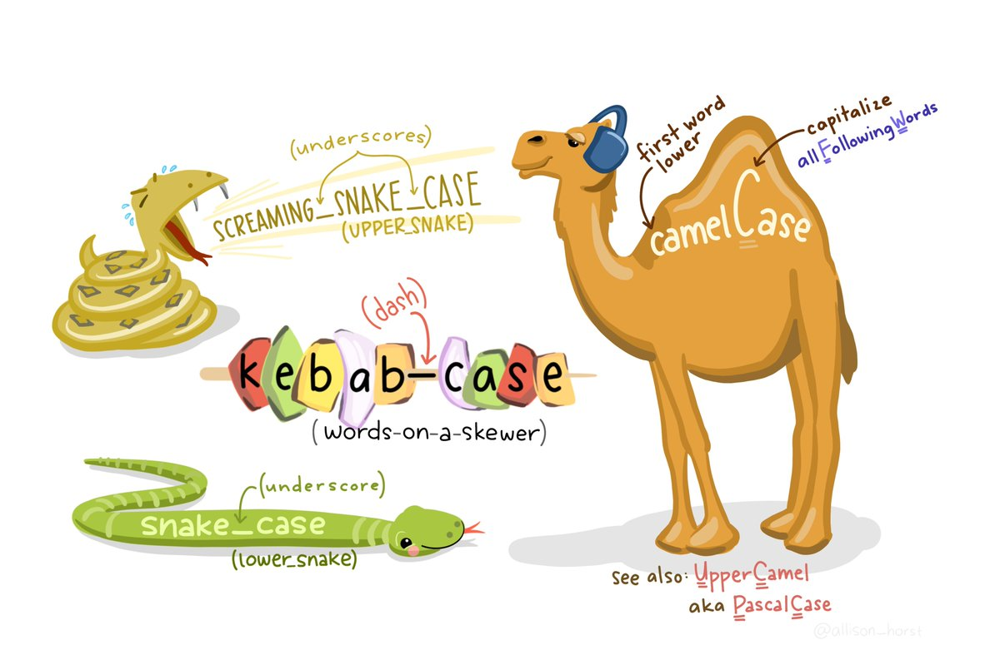
Naming Conventions
- Scripts:
stroke_data_exploration.R,dengue_data_visualization.R, instead ofscrpit1,script2- Can consider
01_,02_… for indicating sequential execution
Naming Conventions (cont.)
- Variables:
age_groupnotageGrporAgGr(consistency matters)- Do not start variable names with numbers
- Consider adding prefix/suffix to indicate variable type (
state_fct,age_group_chr) dem_q1,dem_q2,dem_q3,health_financing_q1,health_financing_q2- Add variable labels if necessary using the
labelledpackage
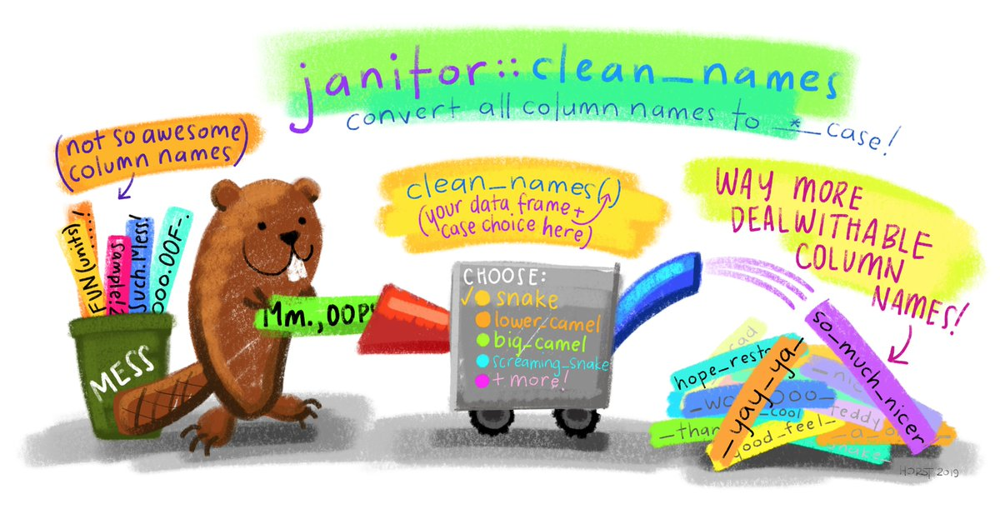
Naming Conventions
- Files:
outbreak_analysis_2025_11_07.R(date in YYYY_MM_DD format)
- Dates:
- Always ISO 8601 (YYYY-MM-DD) in code for consistency across regions
- Use
_datesuffix for indicating dates
- Versions:
- Use version for better management
outbreak_analysis_2025_11_07_v2.Rinstead ofoutbreak_analysis_2025_11_07_final_final.R
- Use version for better management
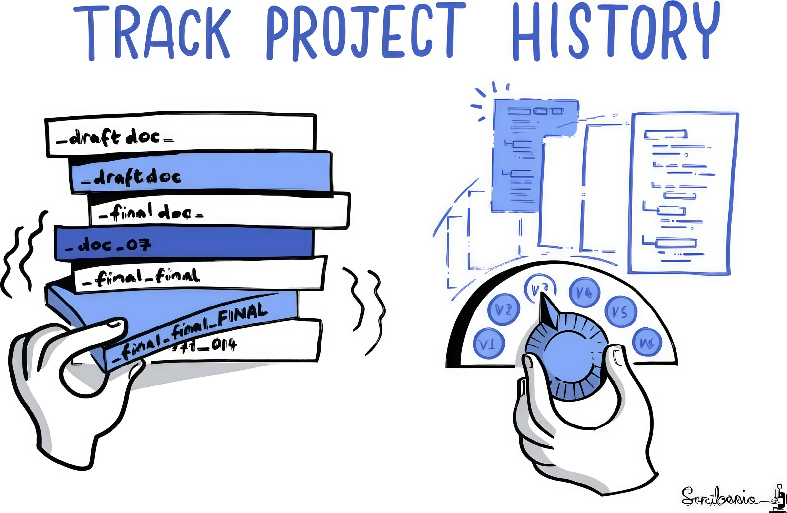
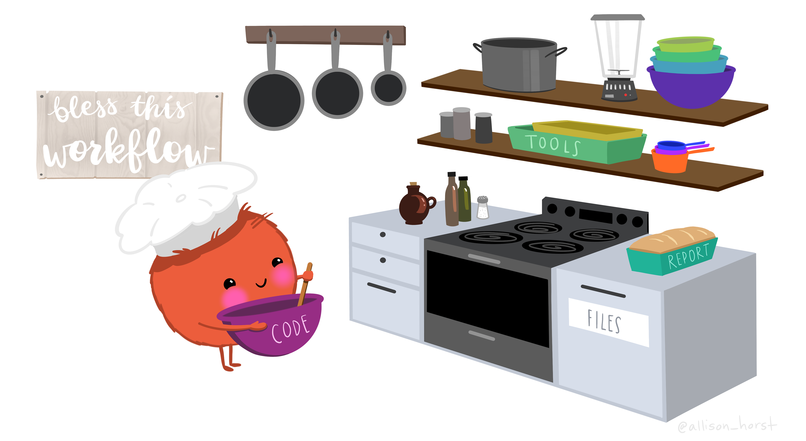
Best Practice #6: Coding Style
Why Coding Style Matters
Code is read 10x more often than it’s written.
The Google R Style Guide Approach
# GOOD: Clear, readable, consistent
calculate_attack_rate <- function(symptomatic_count, total_count) {
# Calculate attack rate as percentage
# Args:
# symptomatic_count: Number of symptomatic individuals
# total_count: Total population at risk
# Returns:
# Attack rate as percentage (0-100)
if (total_count == 0) {
return(NA)
}
(symptomatic_count / total_count) * 100
}
# BAD: Unclear naming, no comments
ar <- function(s, t) {
(s/t)*100
}Example: Good vs. Bad
# This script creates age_group variable from age column
# Load Packages
pacman::p_load(tidyverse, here)
# Load Data
age_data <- read_csv(here("data", "age_sholayur.csv"))
# Create age groups with meaningful labels
age_data <- age_data |>
mutate(
age_group = case_when(age < 5 ~ "0-4",
age < 18 ~ "5-17",
age < 65 ~ "18-64",
age >= 65 ~ "65+")
) |>
mutate(
age_group = factor(age_group,
levels = c("0-4", "5-17", "18-64", "65+"))) |>
)Best Practice #7: Tidy Philosophy
What is “Tidy Data”?
A standardized way to structure datasets for analysis.
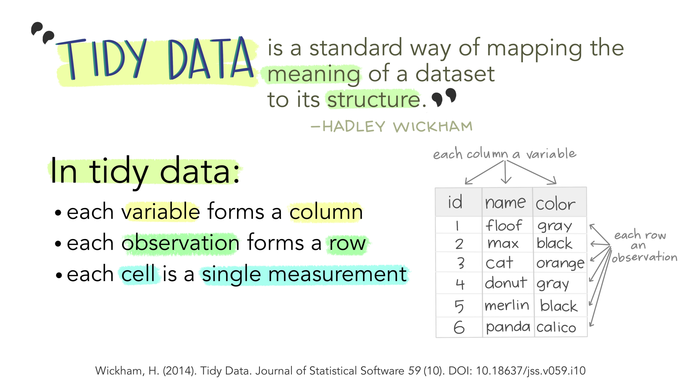
Hadley Wickham’s Principles
- Each variable is a column
- Each observation is a row
- Each value has its own cell
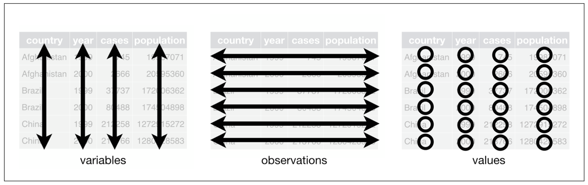
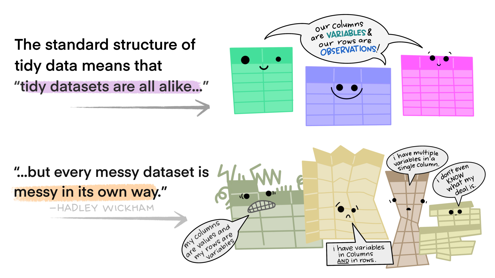
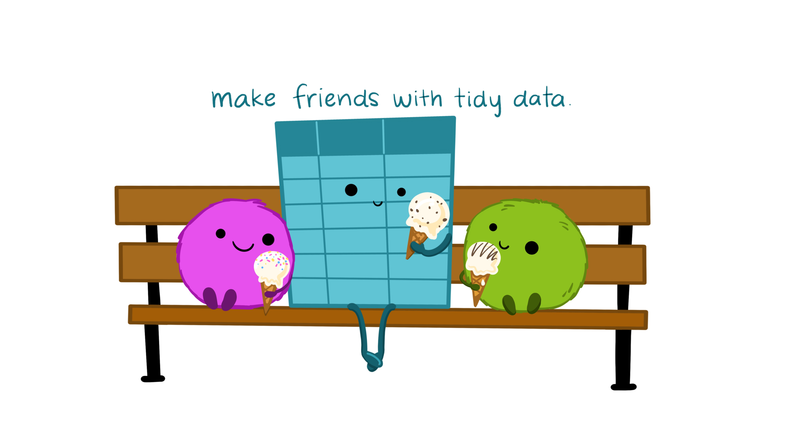
Why Tidy Data Matters for Your Analysis
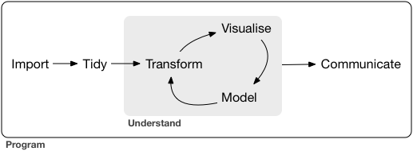
Converting Messy to Tidy
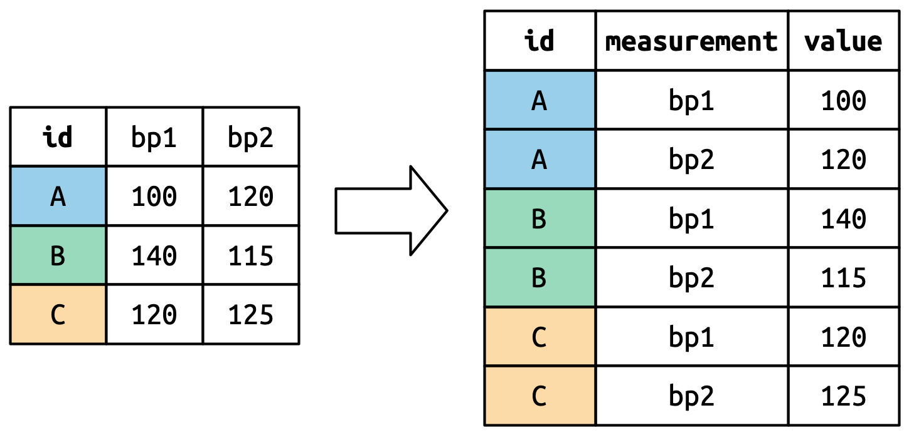
Best Practice #8: Open to Learning
Continuous Improvement Mindset
Data Science and Public Health are Evolving Fields
- Embrace Change, Manage It Thoughtfully
- Avoid Common Pitfalls
Continuous Improvement Mindset (cont.)
Learning Strategies for Trainers
- Read widely
- Experiment safely
- Document lessons learned
- Peer review
- Stay grounded
Best Practice #9: Prompting AI Well
AI is Now Part of the Workflow
The use of AI is inevitable. Using it well is a choice.
- It writes code, drafts text, and explains errors in seconds
- But it is fluent and confident even when it is wrong
- What you get back depends on the quality of what you ask for
- Stay the Human in the Loop: AI assists, you decide
The prompt, not the model, decides whether the output is any good.
Four prompting strategies
| Strategy | What it is | Best for |
|---|---|---|
| Zero-shot | Just ask, no examples | Descriptive stats |
| Explicit | Numbered steps incl. checks | Workflows that mustn’t skip steps |
| Chain-of-thought | “Think step by step” | Auditing the reasoning |
| Hybrid | Steps + reasoning + format | Inferential — the default |
Rule of thumb: descriptive → zero-shot; inferential → hybrid.
Example: Vague vs. Briefed
Skips the assumptions, guesses the design, picks a test for you.
You are a biostatistician.
<context> two-arm trial, 20 patients per arm,
outcome is systolic blood pressure </context>
<data> ... </data>
1. Test for normality and equal variance.
2. Choose the correct test and justify it.
3. Report a table: statistic, df, p-value, 95% CI.
4. Interpret in plain language.Iterate, Do Not Perfect
- The first answer is the average answer; the second is usually better
- Refine in small steps rather than crafting one perfect prompt
- Ask for alternatives and for the reasoning, not just the result
- Resist sycophancy: ask the model to critique, not to confirm
- “Grade this analysis against these criteria” beats “this looks fine, right?”
Prompting is Part of Your Methods
The same discipline as Reproducibility (#2) and Literate Programming (#4).
- Save the prompts that worked, inside the project (
prompts/) - Record the model, its version, and the date
- Set a low temperature for analysis you must reproduce
- Validate every AI-generated number in R before it enters a report
- Never paste identifiable patient data into a cloud LLM
Problem formulation beats perfect wording. Think first, prompt second.
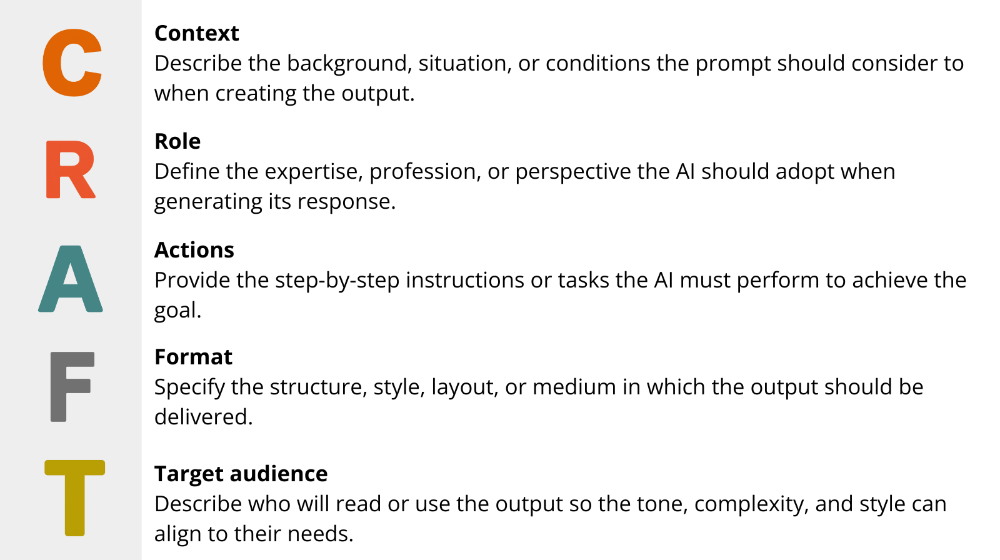
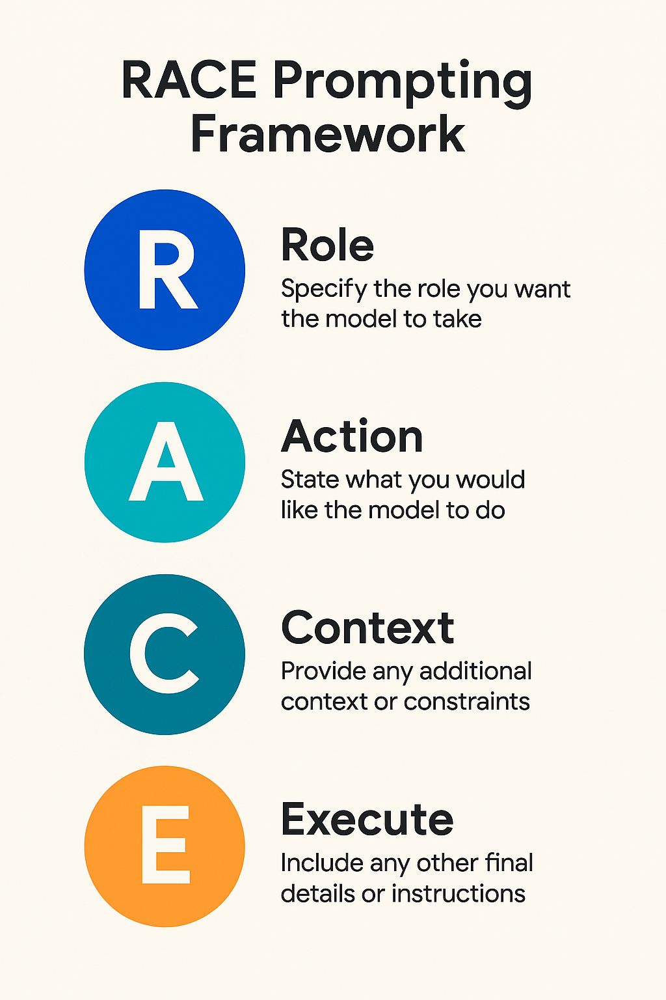
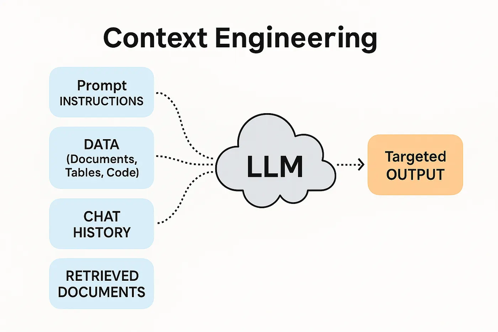
Best Practice #10: Share/Collaborate/Acknowledge
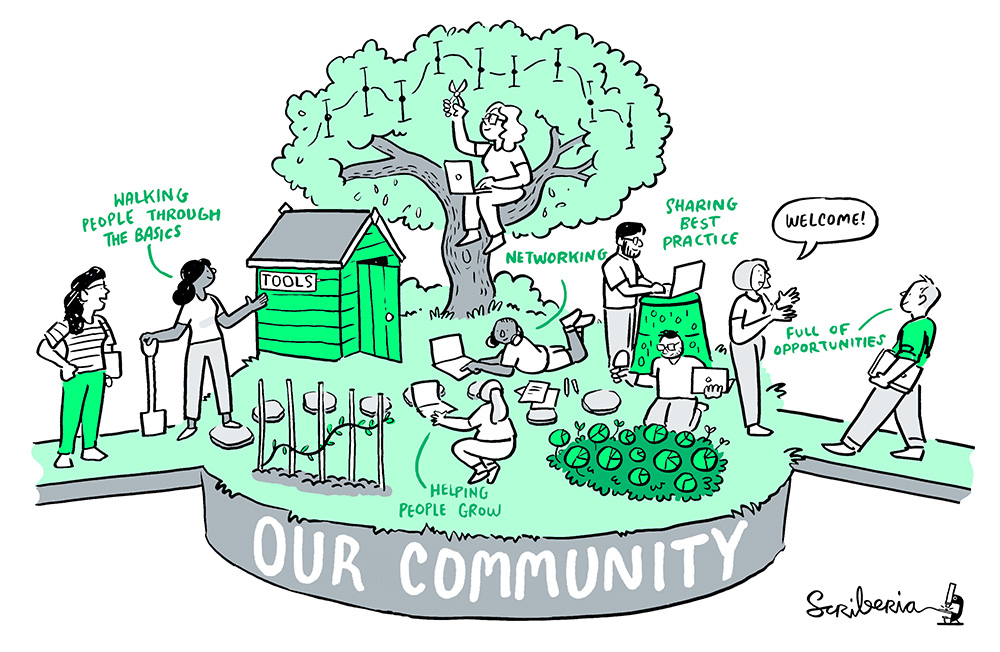
Benefits of Sharing and Acknowledging
- No single person has all the expertise needed in public health data science.
- Opportunity to learn from peers
- Improves your credibility & citations
- Opens avenues for collaboration
- Self Marketing!
Questions?
Thank You

DMgtAsia · Introduction to R & RStudio